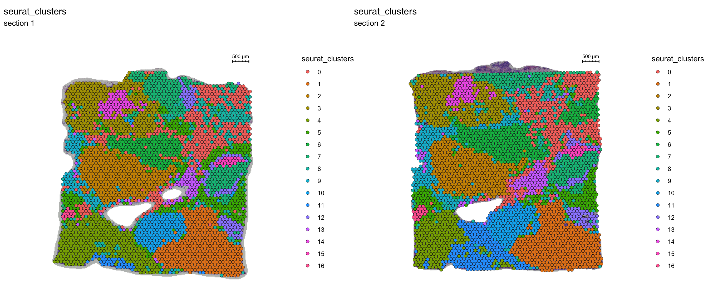
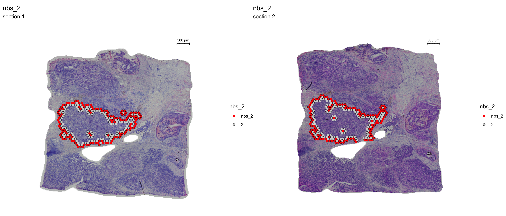
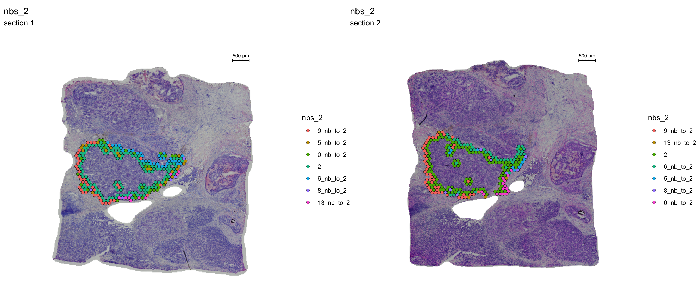

Neighborhood analysis
Last updated: 2020-06-05
Checks: 7 0
Knit directory: STUtility_web_site/
This reproducible R Markdown analysis was created with workflowr (version 1.6.2). The Checks tab describes the reproducibility checks that were applied when the results were created. The Past versions tab lists the development history.
Great! Since the R Markdown file has been committed to the Git repository, you know the exact version of the code that produced these results.
Great job! The global environment was empty. Objects defined in the global environment can affect the analysis in your R Markdown file in unknown ways. For reproduciblity it’s best to always run the code in an empty environment.
The command set.seed(20191031) was run prior to running the code in the R Markdown file. Setting a seed ensures that any results that rely on randomness, e.g. subsampling or permutations, are reproducible.
Great job! Recording the operating system, R version, and package versions is critical for reproducibility.
Nice! There were no cached chunks for this analysis, so you can be confident that you successfully produced the results during this run.
Great job! Using relative paths to the files within your workflowr project makes it easier to run your code on other machines.
Great! You are using Git for version control. Tracking code development and connecting the code version to the results is critical for reproducibility.
The results in this page were generated with repository version 9107651. See the Past versions tab to see a history of the changes made to the R Markdown and HTML files.
Note that you need to be careful to ensure that all relevant files for the analysis have been committed to Git prior to generating the results (you can use wflow_publish or wflow_git_commit). workflowr only checks the R Markdown file, but you know if there are other scripts or data files that it depends on. Below is the status of the Git repository when the results were generated:
Ignored files:
Ignored: .DS_Store
Ignored: analysis/.DS_Store
Ignored: analysis/manual_annotation.png
Ignored: analysis/visualization_3D.Rmd
Ignored: pre_data/
Note that any generated files, e.g. HTML, png, CSS, etc., are not included in this status report because it is ok for generated content to have uncommitted changes.
These are the previous versions of the repository in which changes were made to the R Markdown (analysis/Neighborhood.Rmd) and HTML (docs/Neighborhood.html) files. If you’ve configured a remote Git repository (see ?wflow_git_remote), click on the hyperlinks in the table below to view the files as they were in that past version.
| File | Version | Author | Date | Message |
|---|---|---|---|---|
| html | 651f315 | Ludvig Larsson | 2020-06-05 | Build site. |
| html | a6a0c51 | Ludvig Larsson | 2020-06-05 | Build site. |
| html | f3c5cb4 | Ludvig Larsson | 2020-06-05 | Build site. |
| html | f89df7e | Ludvig Larsson | 2020-06-05 | Build site. |
| html | 1e67a7c | Ludvig Larsson | 2020-06-04 | Build site. |
| Rmd | 3ed4e82 | Ludvig Larsson | 2020-06-04 | fixed_typo |
| html | f71b0c0 | Ludvig Larsson | 2020-06-04 | Build site. |
| html | 8a54a4d | Ludvig Larsson | 2020-06-04 | Build site. |
| html | 5e466eb | Ludvig Larsson | 2020-06-04 | Build site. |
| Rmd | 4819d2b | Ludvig Larsson | 2020-06-04 | update website |
| html | 377408d | Ludvig Larsson | 2020-06-04 | Build site. |
| html | ed54ffb | Ludvig Larsson | 2020-06-04 | Build site. |
| html | f14518c | Ludvig Larsson | 2020-06-04 | Build site. |
| html | efd885b | Ludvig Larsson | 2020-06-04 | Build site. |
| html | 4f42429 | Ludvig Larsson | 2020-06-04 | Build site. |
| Rmd | 3660612 | Ludvig Larsson | 2020-06-04 | update website |
Region neighbors
Sometimes it can be useful to extract the “neighborhood” of a set of spots. As an example, we show how this can be applied to find all the neighboring spots of any region of interest.
To demonstrate the regional neighbors feature, we will use the Breast Cancer data available on the 10x Genomics website.
The Seurat object below contain 2 breast cancer tissue sections which have already been normalized and clustered.
FeatureOverlay(se, features = "seurat_clusters", sampleids = 1:2, ncols.samples = 2, dark.theme = T)
| Version | Author | Date |
|---|---|---|
| 4f42429 | Ludvig Larsson | 2020-06-04 |
Connected Spatial Network
Once you have defined a region of interest and you want to find all spots neighboring to this region you can use the RegionNeighbours function to automatically detect such spots.
For example, let’s say that we want to select all neighbors to cluster 2. The first step is to make sure that the identity of your seurat object is correct, here we need to set it to “seurat_clusters”.
se <- SetIdent(se, value = "seurat_clusters")
se <- RegionNeighbours(se, id = "2", verbose = TRUE)Creating Connected Netork using KNN ...
Found 4763 neighbours for id 2 ...
Excluding neighbours from the same group ...
569 neighbours left ...
Naming all neighbours nbs_2 ...
Saving neighbour ids to column 'nbs_2' ...
Finished.
The default behavior is to find all spots which are neighbors with the selected id but ignoring its label, therefore it will simply be called nbs_2 as in “neighbors to 2”. The output will be stored as a new column in the meta.data slot, and in this example will be called “nbs_2”. The neighborhood detection algorithm is applied to each section separately and can therefore be run on multiple sections at the same time.
FeatureOverlay(se, features = "nbs_2", ncols.samples = 2, sampleids = 1:2, cols = c("red", "lightgray"), pt.size = 2, dark.theme = T)
| Version | Author | Date |
|---|---|---|
| 4f42429 | Ludvig Larsson | 2020-06-04 |
You can also keep all spots from the id group by setting keep.within.id = TRUE.
se <- SetIdent(se, value = "seurat_clusters")
se <- RegionNeighbours(se, id = 2, keep.within.id = T, verbose = TRUE)Creating Connected Netork using KNN ...
Found 4763 neighbours for id 2 ...
Naming all neighbours nbs_2 ...
Saving neighbour ids to column 'nbs_2' ...
Finished. FeatureOverlay(se, features = "nbs_2", ncols.samples = 2, sampleids = 1:2, cols = c("red", "lightgray"), pt.size = 2, dark.theme = T)
| Version | Author | Date |
|---|---|---|
| 4f42429 | Ludvig Larsson | 2020-06-04 |
Using these two sets of spots, we can run a DE analysis to check what genes are up-regulated outside the cluster border.
library(magrittr)
library(dplyr)
se <- SetIdent(se, value = "nbs_2")
nbs_2.markers <- FindMarkers(se, ident.1 = "2", ident.2 = "nbs_2")
nbs_2.markers$gene <- rownames(nbs_2.markers)
se.subset <- SubsetSTData(se, expression = nbs_2 %in% c("2", "nbs_2"))
sorted.marks <- nbs_2.markers %>% top_n(n = 40, wt = abs(avg_logFC))
sorted.marks <- sorted.marks[order(sorted.marks$avg_logFC, decreasing = T), ]
DoHeatmap(se.subset, features = sorted.marks$gene, group.colors = c("red", "lightgray"), disp.min = -2, disp.max = 2) + DarkTheme() 
| Version | Author | Date |
|---|---|---|
| 4f42429 | Ludvig Larsson | 2020-06-04 |
From this DE-test we can for example see that the genes COX6C and FCGR3B genes are up-regulated inside the cluser whereas LGALS1 and CYBA genes are more highly expressed outisde the cluster border.
FeatureOverlay(se.subset, features = c("COX6C", "FCGR3B", "LGALS1", "CYBA"), pt.size = 2, dark.theme = T,
ncols.features = 2, cols = c("darkblue", "cyan", "yellow", "red", "darkred"))
| Version | Author | Date |
|---|---|---|
| 4f42429 | Ludvig Larsson | 2020-06-04 |
And lastly, if you want to keep the labels for the neighbors you can set keep.idents = TRUE and you can keep one label per identity for the neighboring spots, e.g. “label”_nb_to_2
se <- SetIdent(se, value = "seurat_clusters")
se <- RegionNeighbours(se, id = 2, keep.idents = TRUE, verbose = TRUE)Creating Connected Netork using KNN ...
Found 4763 neighbours for id 2 ...
Excluding neighbours from the same group ...
569 neighbours left ...
Naming neighbours to id_nb_to* ...
Saving neighbour ids to column 'nbs_2' ...
Finished. FeatureOverlay(se, features = "nbs_2", ncols.samples = 2, sampleids = 1:2, pt.size = 2, dark.theme = T)
| Version | Author | Date |
|---|---|---|
| 4f42429 | Ludvig Larsson | 2020-06-04 |
A work by Joseph Bergenstråhle and Ludvig Larsson
sessionInfo()R version 4.0.0 (2020-04-24)
Platform: x86_64-apple-darwin17.0 (64-bit)
Running under: macOS Mojave 10.14.6
Matrix products: default
BLAS: /Library/Frameworks/R.framework/Versions/4.0/Resources/lib/libRblas.dylib
LAPACK: /Library/Frameworks/R.framework/Versions/4.0/Resources/lib/libRlapack.dylib
locale:
[1] en_US.UTF-8/en_US.UTF-8/en_US.UTF-8/C/en_US.UTF-8/en_US.UTF-8
attached base packages:
[1] parallel stats4 stats graphics grDevices utils datasets
[8] methods base
other attached packages:
[1] dplyr_0.8.5 magrittr_1.5
[3] STutility_0.1.0 ggplot2_3.3.0
[5] SingleCellExperiment_1.10.1 SummarizedExperiment_1.18.1
[7] DelayedArray_0.14.0 matrixStats_0.56.0
[9] Biobase_2.48.0 GenomicRanges_1.40.0
[11] GenomeInfoDb_1.24.0 IRanges_2.22.1
[13] S4Vectors_0.26.0 BiocGenerics_0.34.0
[15] Seurat_3.1.5 workflowr_1.6.2
loaded via a namespace (and not attached):
[1] reticulate_1.15 tidyselect_1.0.0 htmlwidgets_1.5.1
[4] grid_4.0.0 Rtsne_0.15 munsell_0.5.0
[7] codetools_0.2-16 ica_1.0-2 units_0.6-6
[10] future_1.17.0 miniUI_0.1.1.1 withr_2.2.0
[13] colorspace_1.4-1 knitr_1.28 uuid_0.1-4
[16] ROCR_1.0-11 tensor_1.5 listenv_0.8.0
[19] labeling_0.3 git2r_0.27.1 GenomeInfoDbData_1.2.3
[22] polyclip_1.10-0 farver_2.0.3 rprojroot_1.3-2
[25] coda_0.19-3 LearnBayes_2.15.1 vctrs_0.3.0
[28] xfun_0.13 R6_2.4.1 doParallel_1.0.15
[31] rsvd_1.0.3 Morpho_2.8 ggiraph_0.7.0
[34] manipulateWidget_0.10.1 bitops_1.0-6 spatstat.utils_1.17-0
[37] assertthat_0.2.1 promises_1.1.0 scales_1.1.0
[40] imager_0.42.1 gtable_0.3.0 npsurv_0.4-0.1
[43] globals_0.12.5 bmp_0.3 goftest_1.2-2
[46] rlang_0.4.6 zeallot_0.1.0 akima_0.6-2
[49] systemfonts_0.2.1 splines_4.0.0 lazyeval_0.2.2
[52] rgl_0.100.54 yaml_2.2.1 reshape2_1.4.4
[55] abind_1.4-5 crosstalk_1.1.0.1 backports_1.1.6
[58] httpuv_1.5.2 tools_4.0.0 spData_0.3.5
[61] ellipsis_0.3.0 raster_3.1-5 RColorBrewer_1.1-2
[64] Rvcg_0.19.1 ggridges_0.5.2 Rcpp_1.0.4.6
[67] plyr_1.8.6 zlibbioc_1.34.0 classInt_0.4-3
[70] purrr_0.3.4 RCurl_1.98-1.2 rpart_4.1-15
[73] dbscan_1.1-5 deldir_0.1-25 viridis_0.5.1
[76] pbapply_1.4-2 cowplot_1.0.0 zoo_1.8-8
[79] ggrepel_0.8.2 cluster_2.1.0 colorRamps_2.3
[82] fs_1.4.1 data.table_1.12.8 magick_2.3
[85] readbitmap_0.1.5 gmodels_2.18.1 lmtest_0.9-37
[88] RANN_2.6.1 whisker_0.4 fitdistrplus_1.0-14
[91] patchwork_1.0.0 shinyjs_1.1 lsei_1.2-0.1
[94] mime_0.9 evaluate_0.14 xtable_1.8-4
[97] jpeg_0.1-8.1 gridExtra_2.3 compiler_4.0.0
[100] tibble_3.0.1 KernSmooth_2.23-17 crayon_1.3.4
[103] htmltools_0.4.0 mgcv_1.8-31 later_1.0.0
[106] spdep_1.1-3 tiff_0.1-5 tidyr_1.0.3
[109] expm_0.999-4 DBI_1.1.0 MASS_7.3-51.6
[112] sf_0.9-3 boot_1.3-25 Matrix_1.2-18
[115] gdata_2.18.0 igraph_1.2.5 pkgconfig_2.0.3
[118] sp_1.4-1 plotly_4.9.2.1 xml2_1.3.2
[121] foreach_1.5.0 webshot_0.5.2 XVector_0.28.0
[124] stringr_1.4.0 digest_0.6.25 sctransform_0.2.1
[127] RcppAnnoy_0.0.16 tsne_0.1-3 spatstat.data_1.4-3
[130] rmarkdown_2.1 leiden_0.3.3 uwot_0.1.8
[133] gdtools_0.2.2 gtools_3.8.2 shiny_1.4.0.2
[136] lifecycle_0.2.0 nlme_3.1-147 jsonlite_1.6.1
[139] limma_3.44.1 viridisLite_0.3.0 pillar_1.4.4
[142] lattice_0.20-41 fastmap_1.0.1 httr_1.4.1
[145] survival_3.1-12 glue_1.4.0 spatstat_1.63-3
[148] png_0.1-7 iterators_1.0.12 class_7.3-17
[151] stringi_1.4.6 irlba_2.3.3 e1071_1.7-3
[154] future.apply_1.5.0 ape_5.3